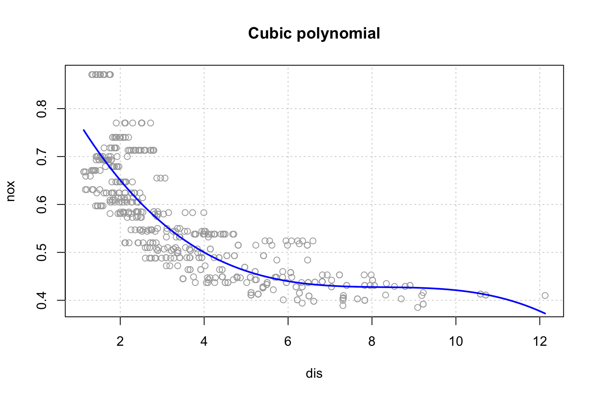
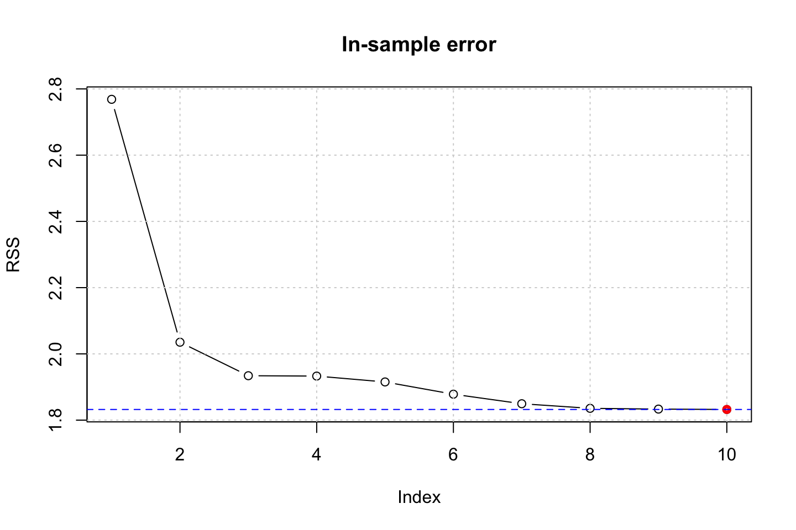
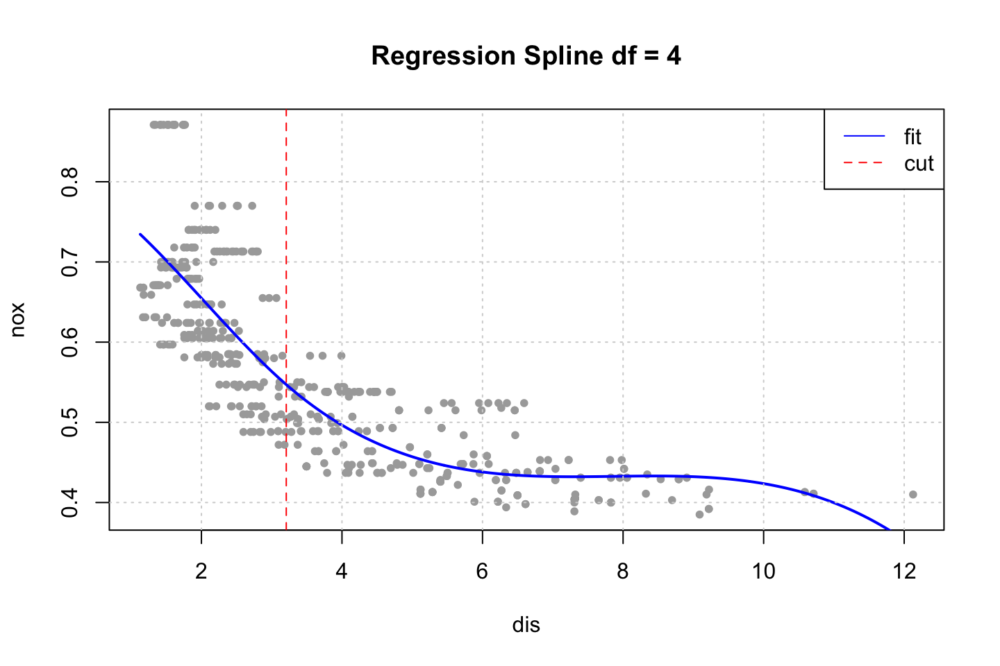
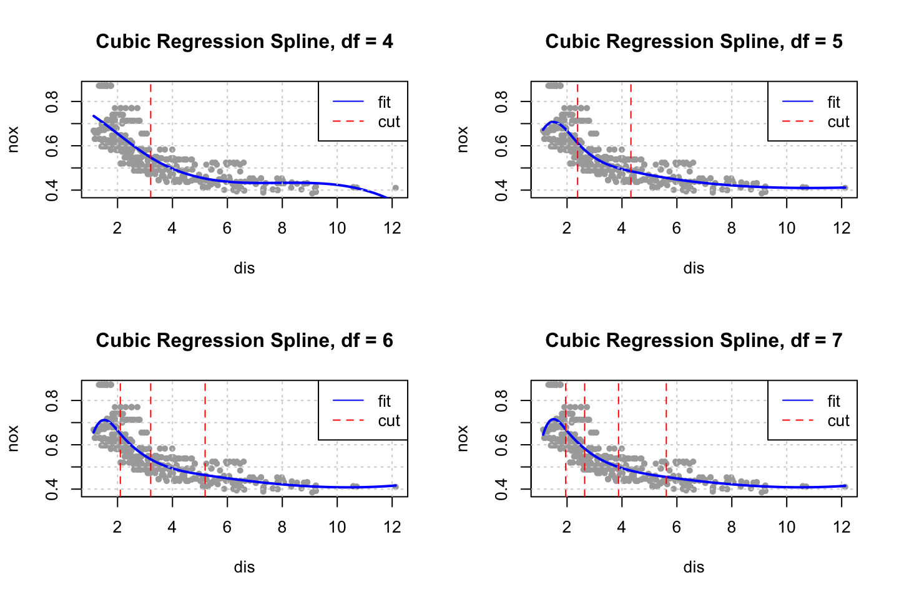
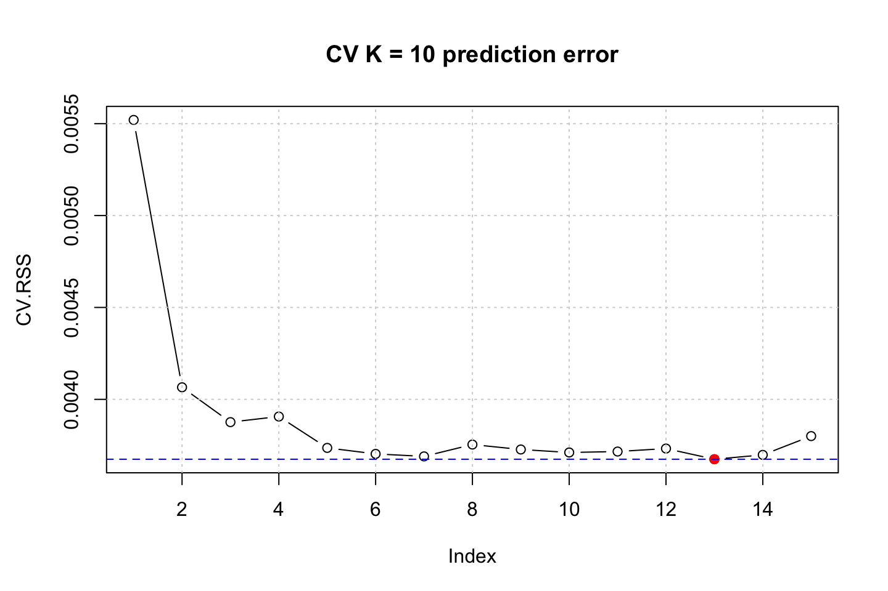
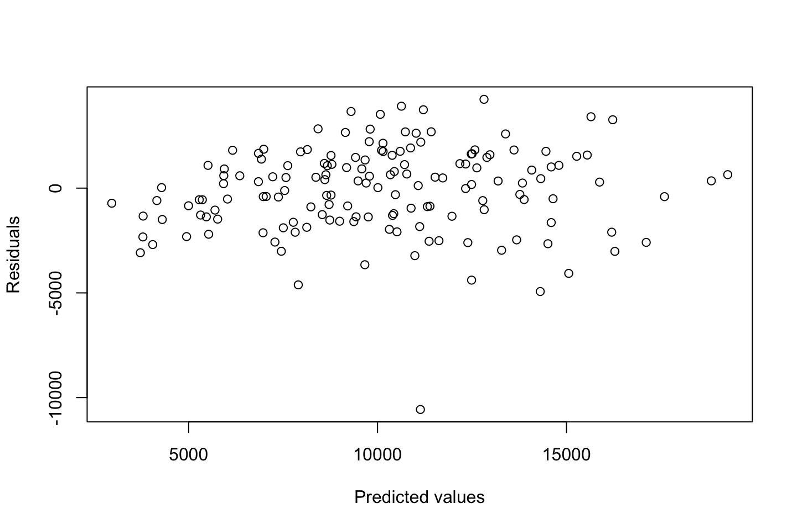
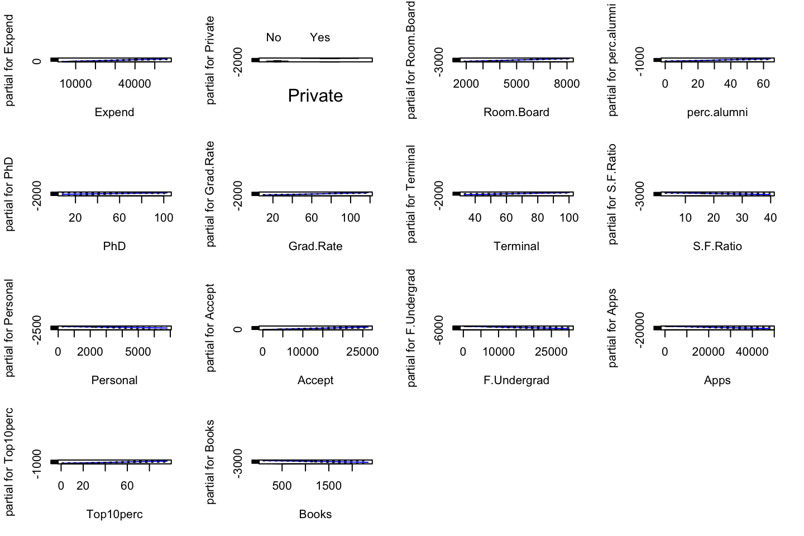
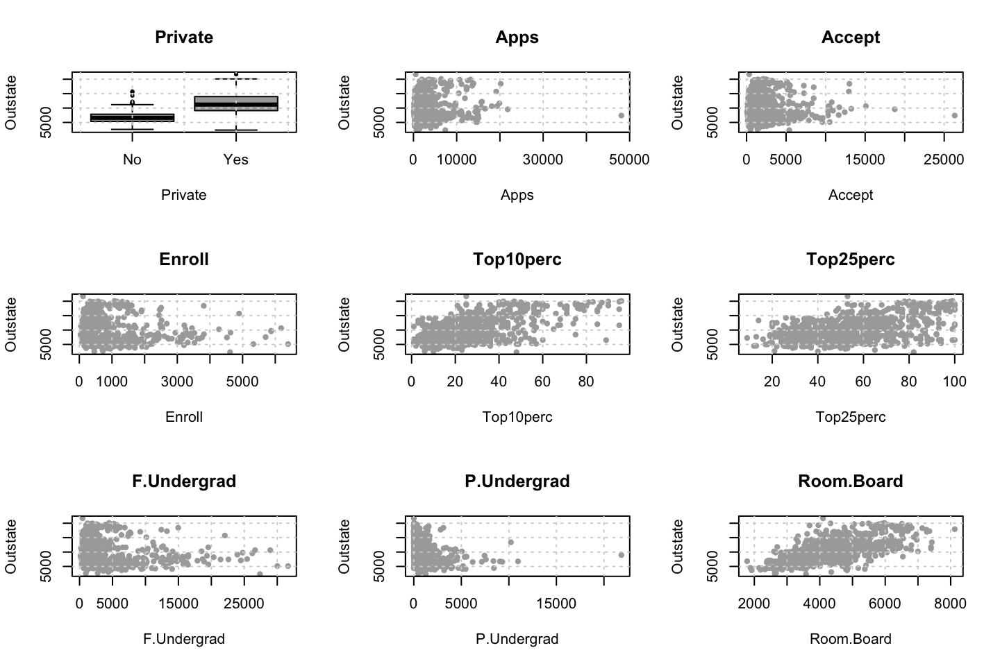
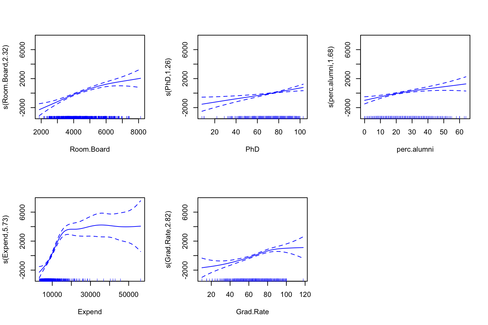
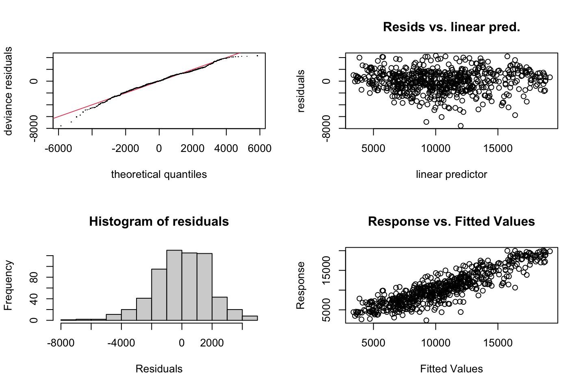

2.4 Exercises
2.4.1 Exercise 6
Purpose, to practice polynomial regression and step functions
library(ISLR)
df <- Wage2.4.1.1 6.a Polynomial Regression
We use orthogonal polynomials in the modeling process as we know that these are slightly better than raw polynomials due to the fact that this tend to avoid collinearity.
Training the model
library(boot) #For the cv.glm() function
set.seed(1337)
cv.error = rep (0,10)
for (i in seq(from = 1,to = length(cv.error),by = 1)) {
#Training
fit.i <- glm(wage ~ poly(age,i),data = df) # notice glm here in conjunction with cv.glm function
#Performing cross validation
cv.error[i] <- cv.glm(data = df,glmfit = fit.i,K = 10)$delta[1] #K fold CV, delta = prediction errer i.e. MSE
}
#Printing the
cv.error # MSE the CV errors of the five polynomials models## [1] 1675.056 1600.832 1594.505 1594.872 1594.608 1593.053 1594.069 1596.428
## [9] 1593.284 1595.530The vector above are all of the prediction errors computed in the loop.
which.min(cv.error)## [1] 6We see that the fifth prediction appear to yield the lowest MSE, but is it significantly different than e.g. forth or third order polynomial?
fit.1 <- glm(wage ~ poly(age,1),data = df)
fit.2 <- glm(wage ~ poly(age,2),data = df)
fit.3 <- glm(wage ~ poly(age,3),data = df)
fit.4 <- glm(wage ~ poly(age,4),data = df)
fit.5 <- glm(wage ~ poly(age,5),data = df)
anova(fit.1,fit.2,fit.3,fit.4,fit.5,test = "F")| Resid. Df | Resid. Dev | Df | Deviance | F | Pr(>F) |
|---|---|---|---|---|---|
| 2998 | 5022216 | NA | NA | NA | NA |
| 2997 | 4793430 | 1 | 228786.010 | 143.5931074 | 0.0000000 |
| 2996 | 4777674 | 1 | 15755.694 | 9.8887559 | 0.0016792 |
| 2995 | 4771604 | 1 | 6070.152 | 3.8098134 | 0.0510462 |
| 2994 | 4770322 | 1 | 1282.563 | 0.8049758 | 0.3696820 |
We can only use these as the models are nested as the variables are the same
Using the F test, we see that on a five percent level the 4th polynomial is not justified, but close to. This argues that we should select the third order of polynomials as that is the last where there is statistical evidence for lowering the residuals.
Thus we select a model with three polynomials. Plotting the errors, we also see that there does not happen much after the third polynomial. We also plotted the standard errors and thus we are able to select based on this.
plot(cv.error,type = "b")
min.point = min(cv.error)
sd.points = sd(cv.error)
abline(h=min.point + 0.2 * sd.points, col="red", lty="dashed") #0.2 is just a rule of thumb, could be anything
abline(h=min.point - 0.2 * sd.points, col="red", lty="dashed")
legend("topright", "0.2-standard deviation lines", lty="dashed", col="red")
Thus, there is even more information supporting selecting three degrees of freedom.
Plotting the polynomial regression
This is done with the following procedure:
- Make a grid counting IDV (Age)
- Make predictions
- Make a plot with the variables
- Fit a line onto the predictions
- Perhaps calculate confidence levels and plot these
#Grid of X
age.grid <- seq(from = min(df$age),to = max(df$age),by = 1)
#Predictions
preds <- predict(object = fit.3
,newdata = list(age = age.grid) #Renaming age.grid to age
,se.fit = TRUE) #We want to produce confidence levels
#Plotting
plot(x = df$age,y = df$wage,col = "darkgrey",cex = 0.8)
grid()
lines(x = age.grid #We need to define the grid, otherwise the fit will not be alligned with the data
,y = preds$fit
,col = "red")
title("Polynomial of 3rd order")2.4.1.2 6.b Step function
cuts <- 4
#Cutting the x variable
table(cut(df$age
,breaks = cuts))##
## (17.9,33.5] (33.5,49] (49,64.5] (64.5,80.1]
## 750 1399 779 72 #' Note, this only shows where the cuts lie and how many there are in each
#Fitting the step function
fit.step <- lm(wage ~ cut(df$age,4)
,data = df)
coef(summary(fit.step))## Estimate Std. Error t value Pr(>|t|)
## (Intercept) 94.158392 1.476069 63.789970 0.000000e+00
## cut(df$age, 4)(33.5,49] 24.053491 1.829431 13.148074 1.982315e-38
## cut(df$age, 4)(49,64.5] 23.664559 2.067958 11.443444 1.040750e-29
## cut(df$age, 4)(64.5,80.1] 7.640592 4.987424 1.531972 1.256350e-01We see that the the first cut (bin with people up to 33,5) have been left out. That is because they are contained in the intercept.
Now we can fit the step function
library(stats)
#Predictions
preds <- predict(object = fit.step
,newdata = list(age = age.grid)) #Renaming age.grid to age
#Plotting
# plot(x = df$age,y = df$wage,col = "darkgrey",cex = 0.8)
# grid()
# lines(age.grid
# ,preds
# ,col = "red")
# title("Step function of 3rd order")I need to check what she is doing, one could perhaps manually order the
2.4.2 Exercise 7
df <- WageEvaluating features other features to see how age respond hereon.
We can plot the variables agains each other, to see how they interact.
library(dplyr)
for (i in 1:10) {
plot(y = df$wage,x = df[,i],xlab = names(df)[i],ylab = "Wage")
grid()
names(df)[i] %>% title()
}


Looking at race, it appears as if there is some relationship between race and wage the same with maritial status. Region only has values in one category, jobclass appear to visually have different means. The same goes for health and health insurance. Naturally log of wage has a non linear relationship with wage. Although the variable is the same, thus it cant be used for much to predict wage levels.
Since all the variables of interest, and we haven’t worked with are all categorical, then we can’t really do any polynomial regression with the data, as they are all factors.
What one could do is a mutlivariate linear model with different factors, or step functions or perhaps GAM where a continous varaible with polynomials are included.
Therefore, I will not elaborate much more on this.
Ana made three different models, notice, that these are linear models, as the polynomial regression is not able to handle this.
fit1 = lm(wage ~ maritl, data = df)
deviance(fit1) # here deviance = RSS## [1] 4858941
fit2 = lm(wage ~ jobclass, data = df)
deviance(fit2)## [1] 4998547
fit3 = lm(wage ~ maritl + jobclass, data = df)
deviance(fit3)# Select model fit3 (smallest deviance)## [1] 4654752
summary(fit3)##
## Call:
## lm(formula = wage ~ maritl + jobclass, data = df)
##
## Residuals:
## Min 1Q Median 3Q Max
## -107.108 -22.689 -5.749 16.445 212.492
##
## Coefficients:
## Estimate Std. Error t value Pr(>|t|)
## (Intercept) 85.315 1.679 50.818 < 2e-16 ***
## maritl2. Married 25.356 1.776 14.279 < 2e-16 ***
## maritl3. Widowed 8.137 9.178 0.887 0.37541
## maritl4. Divorced 9.664 3.166 3.052 0.00229 **
## maritl5. Separated 7.189 5.539 1.298 0.19441
## jobclass2. Information 16.523 1.442 11.460 < 2e-16 ***
## ---
## Signif. codes: 0 '***' 0.001 '**' 0.01 '*' 0.05 '.' 0.1 ' ' 1
##
## Residual standard error: 39.43 on 2994 degrees of freedom
## Multiple R-squared: 0.1086, Adjusted R-squared: 0.1072
## F-statistic: 72.98 on 5 and 2994 DF, p-value: < 2.2e-16We can assess the groups with the contrasts function.
# To interpret first identify which is ref category
contrasts(Wage$maritl) # Never Married is the reference category## 2. Married 3. Widowed 4. Divorced 5. Separated
## 1. Never Married 0 0 0 0
## 2. Married 1 0 0 0
## 3. Widowed 0 1 0 0
## 4. Divorced 0 0 1 0
## 5. Separated 0 0 0 1contrasts(Wage$jobclass) # Industrial is the reference category## 2. Information
## 1. Industrial 0
## 2. Information 1Anova can also show the deviances etc. but notice, these does not appear to be neste d(JK note)?????
- The answer, fit 1 and fit 2 are nested into fit 3. Thus we dont compare fit 1 and fit 2, as these are not nested.
anova(fit1,fit2,fit3)| Res.Df | RSS | Df | Sum of Sq | F | Pr(>F) |
|---|---|---|---|---|---|
| 2995 | 4858941 | NA | NA | NA | NA |
| 2998 | 4998547 | -3 | -139606 | 29.93215 | 0 |
| 2994 | 4654752 | 4 | 343795 | 55.28341 | 0 |
Now we can check the residuals
par(mfrow = c(2,2))
plot(fit3)
Looking at:
- The top left of the plot (residuals vs fitted), we would like these to be around 0.
- The top right, we want them to have a linear shape. This looks odd
Based on this, the model may be questionable. The solution:
- Exclude the extreme values
- Finding a variable that account for them.
2.4.3 Exercise 8
df <- AutoAre we able to predict how old a car is based on the variables at hand?
Hence year = DV
Name contains a lot of value, let us only use the first word, as that appear to be the brand. Therefore a loop is created to correct all the misspelled names.
brand <- strsplit(x = as.character(df$name),split = " ")
brand.name <- as.vector(rep(0,length(brand)))
for (i in c(1:length(brand))) {
brand.name[i] <- brand[[i]][1]
}
table(brand.name)## brand.name
## amc audi bmw buick cadillac
## 27 7 2 17 2
## capri chevroelt chevrolet chevy chrysler
## 1 1 43 3 6
## datsun dodge fiat ford hi
## 23 28 8 48 1
## honda maxda mazda mercedes mercedes-benz
## 13 2 10 1 2
## mercury nissan oldsmobile opel peugeot
## 11 1 10 4 8
## plymouth pontiac renault saab subaru
## 31 16 3 4 4
## toyota toyouta triumph vokswagen volkswagen
## 25 1 1 1 15
## volvo vw
## 6 6
misspelled <- matrix(byrow = TRUE,ncol = 2
,data = c("mercedes","mercedes-benz"
,"toyouta","toyota"
,"chevroelt","chevrolet"
,"maxda","mazda"
,"vokswagen","volkswagen"
,"vw","volkswagen"))
index <- as.vector("")
n <- 0
bn.list <- as.list(0)
brand.name.recent <- brand.name
for (i in c(misspelled[,1])) {
n <- n + 1
index <- rep(FALSE,length(brand.name))
index[brand.name == i] <- TRUE
bn.list[[n]] <- replace(x = brand.name.recent,list = index,values = misspelled[n,2])
brand.name.recent <- replace(x = brand.name.recent,list = index,values = misspelled[n,2])
}
df <- cbind(df[,-9],as.factor(bn.list[[6]]))
names(df)[names(df) == 'bn.list[[6]]'] <- "brand.name"Also we must convert origin to a factor.
df$origin <- as.factor(df$origin)Checking correlations.
The following can be run to see all the combinations
# par(mfrow = c(1,1))
# for (i in 1:dim(mm)[2]) {
# plot(y = df$year,x = mm[,i],xlab = names(mm)[i],ylab = "Year")
# grid()
# colnames(mm)[i] %>% title()
# }Before training the model, we can partition the data to test the model out of sample
set.seed(1337)
train.size <- round(x = nrow(df)*0.8,digits = 0) #Setting the training size
train.index <- sample(x = c(1:nrow(df)),size = train.size) #setting seed and creating vector for index
mm <- model.matrix(year ~ .,data = df)[,-1] #tried to make it mm first, to get rid of having variables that were in one partition but not the other.
year <- df$year
train.df <- as.data.frame(cbind(year,mm[train.index,])) #crating the training set
test.df <- as.data.frame(cbind(year,mm[-train.index,])) #creating the testing setlibrary(gam)
gam.m1 <- gam(year ~ s(train.df$mpg,df = 5) + s(train.df$cylinders,df = 5) + s(train.df$displacement,df = 5) + s(train.df$horsepower,df = 5) + s(train.df$weight,df = 5) + s(train.df$acceleration,df = 5) + .
,data = train.df)
summary(gam.m1)##
## Call: gam(formula = year ~ s(train.df$mpg, df = 5) + s(train.df$cylinders,
## df = 5) + s(train.df$displacement, df = 5) + s(train.df$horsepower,
## df = 5) + s(train.df$weight, df = 5) + s(train.df$acceleration,
## df = 5) + ., data = train.df)
## Deviance Residuals:
## Min 1Q Median 3Q Max
## -5.5818 -2.0705 -0.2068 2.0660 6.0843
##
## (Dispersion Parameter for gaussian family taken to be 8.889)
##
## Null Deviance: 2675.86 on 313 degrees of freedom
## Residual Deviance: 2266.693 on 255.0004 degrees of freedom
## AIC: 1631.771
##
## Number of Local Scoring Iterations: NA
##
## Anova for Parametric Effects
## Df Sum Sq Mean Sq F value
## s(train.df$mpg, df = 5) 1 10.71 10.707 1.2045
## s(train.df$cylinders, df = 5) 1 0.00 0.002 0.0003
## s(train.df$displacement, df = 5) 1 2.44 2.441 0.2747
## s(train.df$horsepower, df = 5) 1 0.13 0.134 0.0151
## s(train.df$weight, df = 5) 1 5.93 5.926 0.6667
## s(train.df$acceleration, df = 5) 1 1.52 1.517 0.1706
## origin2 1 16.05 16.050 1.8056
## origin3 1 11.10 11.097 1.2484
## `\\`as.factor(bn.list[[6]])\\`audi` 1 6.53 6.526 0.7342
## `\\`as.factor(bn.list[[6]])\\`bmw` 1 32.67 32.668 3.6751
## `\\`as.factor(bn.list[[6]])\\`buick` 1 8.31 8.307 0.9345
## `\\`as.factor(bn.list[[6]])\\`cadillac` 1 0.85 0.854 0.0960
## `\\`as.factor(bn.list[[6]])\\`capri` 1 0.00 0.003 0.0004
## `\\`as.factor(bn.list[[6]])\\`chevrolet` 1 0.23 0.230 0.0258
## `\\`as.factor(bn.list[[6]])\\`chevy` 1 0.00 0.003 0.0004
## `\\`as.factor(bn.list[[6]])\\`chrysler` 1 46.30 46.301 5.2088
## `\\`as.factor(bn.list[[6]])\\`datsun` 1 18.32 18.321 2.0611
## `\\`as.factor(bn.list[[6]])\\`dodge` 1 2.70 2.702 0.3040
## `\\`as.factor(bn.list[[6]])\\`fiat` 1 1.89 1.895 0.2132
## `\\`as.factor(bn.list[[6]])\\`ford` 1 25.85 25.847 2.9077
## `\\`as.factor(bn.list[[6]])\\`hi` 1 0.34 0.337 0.0379
## `\\`as.factor(bn.list[[6]])\\`honda` 1 3.40 3.401 0.3826
## `\\`as.factor(bn.list[[6]])\\`mazda` 1 4.99 4.986 0.5609
## `\\`as.factor(bn.list[[6]])\\`mercedes-benz` 1 0.01 0.014 0.0016
## `\\`as.factor(bn.list[[6]])\\`mercury` 1 0.31 0.313 0.0352
## `\\`as.factor(bn.list[[6]])\\`nissan` 1 3.68 3.684 0.4145
## `\\`as.factor(bn.list[[6]])\\`oldsmobile` 1 18.12 18.124 2.0389
## `\\`as.factor(bn.list[[6]])\\`opel` 1 0.30 0.303 0.0341
## `\\`as.factor(bn.list[[6]])\\`peugeot` 1 1.79 1.794 0.2018
## `\\`as.factor(bn.list[[6]])\\`plymouth` 1 0.53 0.527 0.0593
## `\\`as.factor(bn.list[[6]])\\`pontiac` 1 4.37 4.374 0.4921
## `\\`as.factor(bn.list[[6]])\\`renault` 1 16.53 16.533 1.8600
## `\\`as.factor(bn.list[[6]])\\`saab` 1 0.10 0.103 0.0115
## `\\`as.factor(bn.list[[6]])\\`subaru` 1 0.00 0.001 0.0001
## `\\`as.factor(bn.list[[6]])\\`volkswagen` 1 0.63 0.634 0.0713
## Residuals 255 2266.69 8.889
## Pr(>F)
## s(train.df$mpg, df = 5) 0.27346
## s(train.df$cylinders, df = 5) 0.98665
## s(train.df$displacement, df = 5) 0.60068
## s(train.df$horsepower, df = 5) 0.90226
## s(train.df$weight, df = 5) 0.41496
## s(train.df$acceleration, df = 5) 0.67989
## origin2 0.18023
## origin3 0.26491
## `\\`as.factor(bn.list[[6]])\\`audi` 0.39233
## `\\`as.factor(bn.list[[6]])\\`bmw` 0.05635 .
## `\\`as.factor(bn.list[[6]])\\`buick` 0.33460
## `\\`as.factor(bn.list[[6]])\\`cadillac` 0.75690
## `\\`as.factor(bn.list[[6]])\\`capri` 0.98494
## `\\`as.factor(bn.list[[6]])\\`chevrolet` 0.87244
## `\\`as.factor(bn.list[[6]])\\`chevy` 0.98454
## `\\`as.factor(bn.list[[6]])\\`chrysler` 0.02330 *
## `\\`as.factor(bn.list[[6]])\\`datsun` 0.15233
## `\\`as.factor(bn.list[[6]])\\`dodge` 0.58186
## `\\`as.factor(bn.list[[6]])\\`fiat` 0.64469
## `\\`as.factor(bn.list[[6]])\\`ford` 0.08937 .
## `\\`as.factor(bn.list[[6]])\\`hi` 0.84586
## `\\`as.factor(bn.list[[6]])\\`honda` 0.53679
## `\\`as.factor(bn.list[[6]])\\`mazda` 0.45459
## `\\`as.factor(bn.list[[6]])\\`mercedes-benz` 0.96840
## `\\`as.factor(bn.list[[6]])\\`mercury` 0.85133
## `\\`as.factor(bn.list[[6]])\\`nissan` 0.52028
## `\\`as.factor(bn.list[[6]])\\`oldsmobile` 0.15454
## `\\`as.factor(bn.list[[6]])\\`opel` 0.85372
## `\\`as.factor(bn.list[[6]])\\`peugeot` 0.65362
## `\\`as.factor(bn.list[[6]])\\`plymouth` 0.80775
## `\\`as.factor(bn.list[[6]])\\`pontiac` 0.48365
## `\\`as.factor(bn.list[[6]])\\`renault` 0.17383
## `\\`as.factor(bn.list[[6]])\\`saab` 0.91452
## `\\`as.factor(bn.list[[6]])\\`subaru` 0.99320
## `\\`as.factor(bn.list[[6]])\\`volkswagen` 0.78966
## Residuals
## ---
## Signif. codes: 0 '***' 0.001 '**' 0.01 '*' 0.05 '.' 0.1 ' ' 1
##
## Anova for Nonparametric Effects
## Npar Df Npar F Pr(F)
## (Intercept)
## s(train.df$mpg, df = 5) 4 0.97458 0.4219
## s(train.df$cylinders, df = 5) 3 0.63467 0.5933
## s(train.df$displacement, df = 5) 4 1.72358 0.1452
## s(train.df$horsepower, df = 5) 4 1.13935 0.3384
## s(train.df$weight, df = 5) 4 0.69772 0.5941
## s(train.df$acceleration, df = 5) 4 0.93342 0.4451
## mpg
## cylinders
## displacement
## horsepower
## weight
## acceleration
## origin2
## origin3
## `\\`as.factor(bn.list[[6]])\\`audi`
## `\\`as.factor(bn.list[[6]])\\`bmw`
## `\\`as.factor(bn.list[[6]])\\`buick`
## `\\`as.factor(bn.list[[6]])\\`cadillac`
## `\\`as.factor(bn.list[[6]])\\`capri`
## `\\`as.factor(bn.list[[6]])\\`chevrolet`
## `\\`as.factor(bn.list[[6]])\\`chevy`
## `\\`as.factor(bn.list[[6]])\\`chrysler`
## `\\`as.factor(bn.list[[6]])\\`datsun`
## `\\`as.factor(bn.list[[6]])\\`dodge`
## `\\`as.factor(bn.list[[6]])\\`fiat`
## `\\`as.factor(bn.list[[6]])\\`ford`
## `\\`as.factor(bn.list[[6]])\\`hi`
## `\\`as.factor(bn.list[[6]])\\`honda`
## `\\`as.factor(bn.list[[6]])\\`mazda`
## `\\`as.factor(bn.list[[6]])\\`mercedes-benz`
## `\\`as.factor(bn.list[[6]])\\`mercury`
## `\\`as.factor(bn.list[[6]])\\`nissan`
## `\\`as.factor(bn.list[[6]])\\`oldsmobile`
## `\\`as.factor(bn.list[[6]])\\`opel`
## `\\`as.factor(bn.list[[6]])\\`peugeot`
## `\\`as.factor(bn.list[[6]])\\`plymouth`
## `\\`as.factor(bn.list[[6]])\\`pontiac`
## `\\`as.factor(bn.list[[6]])\\`renault`
## `\\`as.factor(bn.list[[6]])\\`saab`
## `\\`as.factor(bn.list[[6]])\\`subaru`
## `\\`as.factor(bn.list[[6]])\\`toyota`
## `\\`as.factor(bn.list[[6]])\\`triumph`
## `\\`as.factor(bn.list[[6]])\\`volkswagen`
## `\\`as.factor(bn.list[[6]])\\`volvo`It appears as if non of the parameters are good predictors.
Then one could try out other models, or perhaps it is just very difficult with the data at hand to predict the year of the car.
2.4.4 Exercise 9
library(MASS)
df <- Boston
df <- as.data.frame(cbind(df$nox,df$dis))
colnames(df) <- c("nox","dis")2.4.4.1 (a) using poly function to fit cubic polynomial regression
fit.poly <- lm(nox ~ poly(dis,3),data = df)
summary(fit.poly)##
## Call:
## lm(formula = nox ~ poly(dis, 3), data = df)
##
## Residuals:
## Min 1Q Median 3Q Max
## -0.121130 -0.040619 -0.009738 0.023385 0.194904
##
## Coefficients:
## Estimate Std. Error t value Pr(>|t|)
## (Intercept) 0.554695 0.002759 201.021 < 2e-16 ***
## poly(dis, 3)1 -2.003096 0.062071 -32.271 < 2e-16 ***
## poly(dis, 3)2 0.856330 0.062071 13.796 < 2e-16 ***
## poly(dis, 3)3 -0.318049 0.062071 -5.124 0.000000427 ***
## ---
## Signif. codes: 0 '***' 0.001 '**' 0.01 '*' 0.05 '.' 0.1 ' ' 1
##
## Residual standard error: 0.06207 on 502 degrees of freedom
## Multiple R-squared: 0.7148, Adjusted R-squared: 0.7131
## F-statistic: 419.3 on 3 and 502 DF, p-value: < 2.2e-16Remember that we are not interested in the coefficients as they are misleading, thus we want to look at the shape.
The table above is mostly presented for explanatory reasons.
As we are interested in the curve, we can fit that.
#Defining range
dislims <- range(df$dis)
n <- (dislims[2]-dislims[1])/nrow(df)
dis.grid <- seq(from = dislims[1],to = dislims[2],by = n)
#Predictions for the plot
preds <- predict(object = fit.poly,newdata = list(dis = dis.grid))
#Plotting
plot(nox ~ dis, data = df, col = "darkgrey")
grid()
lines(x = dis.grid,y = preds, col = "blue",lwd = 2)
title("Cubic polynomial")
2.4.4.2 (b) Plotting polynomial fits for a range of polynomials
models <- list()
RSS <- 0
for (d in 1:10) {
models[[d]] <- lm(nox ~ poly(dis,d),data = df)
RSS[d] <- sum(residuals(models[[d]])^2)
}
plot(RSS,type = "b")
points(x = which.min(RSS),y = RSS[which.min(RSS)],col = "red",pch = 19)
grid()
abline(h = min(RSS),col = "blue",lty = 2)
title("In-sample error")
We see that the RSS decrease with complexity, that it as expected, as we fit to the in sample data. We could do this with a partition of the data to see out of performance instead.
2.4.4.3 (c) Using CV to select best degree of d
Here we run a loop with cross validation to see how the different order of d performs. As the partitions are randomly selected, we preduce 10 simulations to see which orders that tend to occur most often.
models <- list()
RSS <- 0
CV.RSS <- 0
CV.RSS.sim <- 0
for (i in 1:20) {
for (d in 1:10) {
models[[d]] <- glm(nox ~ poly(dis,d),data = df)
RSS[d] <- sum(residuals(models[[d]])^2)
CV.RSS[d] <- cv.glm(data = df,glmfit = models[[d]],K = 10)$delta[2] #Delta = prediction error (adjusted)
}
CV.RSS.sim[i] <- which.min(CV.RSS)
}
#Plotting prediction error
plot(CV.RSS,type = "b")
points(x = which.min(CV.RSS),y = CV.RSS[which.min(CV.RSS)],col = "red",pch = 19)
grid()
abline(h = min(CV.RSS),col = "blue",lty = 2)
title("CV K = 10 prediction error")
#Plotting simulations
barplot(table(CV.RSS.sim),xlab = "Degree of d",ylab = "Frequency")
abline(h = 0)
title("CV K = 10, Iterations = 20")
In these simulations we see that the best fit is likely to be with using .
It is actually quite interesting that a model with 10 degrees of d is as competitive as 4 in this example, although the cubic model is far superior than the other models.
2.4.4.4 (d) Use bs() to fit a regression spline
par(mfrow = c(1,1))
fit.bs <- lm(nox ~ bs(dis,df = 4),data = df) #Note as degree is not defined, default = 3
preds <- predict(object = fit.bs,newdata = list(dis = dis.grid))
plot(x = df$dis,y = df$nox,col = "darkgrey",pch = 20,ylab = "nox",xlab = "dis")
lines(x = dis.grid,y = preds,col = "blue",lwd = 2)
grid()
title("Regression Spline df = 4")
abline(v = 3.20745,col = "red",lty = 2) #This is the cut, found in next chunk
legend(x = "topright",legend = c("fit","cut"),lty = 1:2,col = c("blue","red"))
Notice that we merely specified the amount of df that we wanted. The function merely specified them automatically. We can interpret these, by using dim() and attr().
print(dim(bs(df$dis,df = 4)))## [1] 506 4attr(bs(df$dis,df = 4),"knots")## 50%
## 3.20745We see that a model with 4 degrees of freedom yields one cut. Where the model put this at 50%, hence the first half (up to 3.20745). For simplicity, this cut has been added to the plot above, to show where the spline is split.
2.4.4.5 (e) Now fit a regression spline
par(mfrow = c(2,2))
for (d in 4:7) {
#The fit + preds
fit.bs <- lm(nox ~ bs(dis,df = d,degree = 3),data = df)
preds <- predict(object = fit.bs,newdata = list(dis = dis.grid))
#Cut
cut <- attr(bs(df$dis,df = d),"knots")
#Plot
plot(x = df$dis,y = df$nox,col = "darkgrey",pch = 20,ylab = "nox",xlab = "dis")
lines(x = dis.grid,y = preds,col = "blue",lwd = 2)
grid()
title(paste("Cubic Regression Spline, df =",d))
abline(v = cut,col = "red",lty = 2) #This is the cut, found in next chunk
legend(x = "topright",legend = c("fit","cut"),lty = 1:2,col = c("blue","red"))
}
We start at four degrees of freedom as a model with only three degrees of freedom, hence cubic regression (three orders of polynomials) = three degrees of freedom (this has to be fact checked).
As we add complexity with knots we also adds degrees of freedom, where we add one degree of freedom for each cut, hence for the cubic spline with 7 degrees of freedom, four cuts and three polynomials (this has to be fact checked).
2.4.4.6 (f) Perform cross-validation, to select degrees
models <- list()
RSS <- 0
CV.RSS.sim <- 0
for (i in 1:20) {
for (d in 4:15) {
models[[d]] <- glm(nox ~ bs(dis,df = d,degree = 3),data = df)
RSS[d] <- sum(residuals(models[[d]])^2)
CV.RSS[d] <- cv.glm(data = df,glmfit = models[[d]],K = 10)$delta[2] #Delta = prediction error (adjusted)
}
CV.RSS.sim[i] <- which.min(CV.RSS)
}
par(mfrow = c(1,1),mar = c(5,4.5,4.5,2.1),oma = c(0,0,0,0))
#Plotting prediction error
plot(CV.RSS,type = "b")
points(x = which.min(CV.RSS),y = CV.RSS[which.min(CV.RSS)],col = "red",pch = 19)
grid()
abline(h = min(CV.RSS),col = "blue",lty = 2)
title("CV K = 10 prediction error")
#Plotting simulations
barplot(table(CV.RSS.sim),xlab = "Degree of d",ylab = "Frequency")
abline(h = 0)
title("CV K = 10, Iterations = 20")
First we see the last iteration and the prediction error hereof. Overall we see that it tend to be the rather complex models tend to be
2.4.5 Exercise 10
2.4.5.1 (a) Partitioning the data
#Loading
df <- College
#Partitioning
set.seed(1337)
train.size <- round(x = nrow(df)*0.8,digits = 0) #Setting the training size
train.index <- sample(x = c(1:nrow(df)),size = train.size) #setting seed and creating vector for index
train.df <- df[train.index,] #crating the training set
test.df <- df[-train.index,] #creating the testing set
rm(train.size)
rm(train.index)Finding the best subset using forward selection
reg_null <- lm(Outstate ~ 1,data = train.df) #The null models
reg_full <- lm(Outstate ~ .,data = train.df) #The full model
step.for <- stepAIC(direction = "forward",object = reg_null,trace = TRUE,scope = list(upper = reg_full,lower = reg_null)) #This could also have been done with regsubsets()## Start: AIC=10345.68
## Outstate ~ 1
##
## Df Sum of Sq RSS AIC
## + Expend 1 4629213116 5745572675 9980.1
## + Room.Board 1 4590249421 5784536370 9984.3
## + Grad.Rate 1 3627082940 6747702852 10080.1
## + Top10perc 1 3457381465 6917404327 10095.6
## + perc.alumni 1 3450011987 6924773804 10096.2
## + S.F.Ratio 1 3359826734 7014959058 10104.3
## + Private 1 3075173999 7299611793 10129.0
## + Top25perc 1 2644625673 7730160118 10164.7
## + Terminal 1 2115825269 8258960523 10205.8
## + PhD 1 1886906305 8487879487 10222.8
## + Personal 1 735337851 9639447941 10301.9
## + P.Undergrad 1 571871111 9802914681 10312.4
## + F.Undergrad 1 404016737 9970769054 10323.0
## + Enroll 1 180722874 10194062918 10336.7
## + Apps 1 52841694 10321944097 10344.5
## <none> 10374785791 10345.7
## + Books 1 14584993 10360200799 10346.8
## + Accept 1 90338 10374695453 10347.7
##
## Step: AIC=9980.11
## Outstate ~ Expend
##
## Df Sum of Sq RSS AIC
## + Private 1 1549696145 4195876531 9786.6
## + Room.Board 1 1512070540 4233502135 9792.1
## + Grad.Rate 1 1328830834 4416741842 9818.5
## + perc.alumni 1 1089768014 4655804661 9851.3
## + Personal 1 501146318 5244426358 9925.3
## + S.F.Ratio 1 464809224 5280763451 9929.6
## + F.Undergrad 1 454756490 5290816185 9930.8
## + P.Undergrad 1 349207380 5396365295 9943.1
## + Top10perc 1 346779721 5398792955 9943.4
## + Top25perc 1 345553704 5400018971 9943.5
## + Enroll 1 331862326 5413710349 9945.1
## + Terminal 1 269786468 5475786207 9952.2
## + PhD 1 210830779 5534741896 9958.9
## + Apps 1 110876800 5634695875 9970.0
## + Accept 1 85558833 5660013842 9972.8
## + Books 1 18850616 5726722060 9980.1
## <none> 5745572675 9980.1
##
## Step: AIC=9786.59
## Outstate ~ Expend + Private
##
## Df Sum of Sq RSS AIC
## + Room.Board 1 876836109 3319040422 9642.8
## + Terminal 1 743790341 3452086190 9667.2
## + Grad.Rate 1 703122598 3492753933 9674.5
## + PhD 1 693220664 3502655866 9676.3
## + perc.alumni 1 408270963 3787605568 9724.9
## + Top25perc 1 401010315 3794866215 9726.1
## + Top10perc 1 319956878 3875919653 9739.3
## + Accept 1 152840390 4043036140 9765.5
## + Personal 1 128047157 4067829374 9769.3
## + Apps 1 118364448 4077512083 9770.8
## + Enroll 1 37847497 4158029034 9783.0
## + S.F.Ratio 1 28944091 4166932439 9784.3
## + F.Undergrad 1 16848576 4179027955 9786.1
## <none> 4195876531 9786.6
## + Books 1 5437161 4190439370 9787.8
## + P.Undergrad 1 3721562 4192154968 9788.0
##
## Step: AIC=9642.78
## Outstate ~ Expend + Private + Room.Board
##
## Df Sum of Sq RSS AIC
## + perc.alumni 1 419740777 2899299645 9560.7
## + Grad.Rate 1 412477957 2906562465 9562.2
## + PhD 1 379305385 2939735036 9569.3
## + Terminal 1 369656216 2949384206 9571.3
## + Top25perc 1 311299881 3007740541 9583.5
## + Top10perc 1 280108774 3038931648 9589.9
## + Personal 1 84780679 3234259743 9628.7
## + Accept 1 42471882 3276568540 9636.8
## + Books 1 35245677 3283794745 9638.1
## + P.Undergrad 1 29148614 3289891808 9639.3
## + S.F.Ratio 1 27660641 3291379781 9639.6
## + Apps 1 24109291 3294931131 9640.2
## + Enroll 1 12561816 3306478606 9642.4
## <none> 3319040422 9642.8
## + F.Undergrad 1 2021439 3317018983 9644.4
##
## Step: AIC=9560.68
## Outstate ~ Expend + Private + Room.Board + perc.alumni
##
## Df Sum of Sq RSS AIC
## + PhD 1 248319695 2650979950 9507.0
## + Terminal 1 241588269 2657711376 9508.6
## + Grad.Rate 1 194250957 2705048688 9519.5
## + Top25perc 1 146504265 2752795380 9530.4
## + Top10perc 1 124783671 2774515974 9535.3
## + Accept 1 68407796 2830891849 9547.8
## + Apps 1 37351605 2861948040 9554.6
## + Personal 1 22021761 2877277884 9557.9
## + Enroll 1 21250394 2878049251 9558.1
## + Books 1 16826748 2882472897 9559.1
## + S.F.Ratio 1 12022816 2887276829 9560.1
## <none> 2899299645 9560.7
## + F.Undergrad 1 9250654 2890048991 9560.7
## + P.Undergrad 1 5862353 2893437292 9561.4
##
## Step: AIC=9506.99
## Outstate ~ Expend + Private + Room.Board + perc.alumni + PhD
##
## Df Sum of Sq RSS AIC
## + Grad.Rate 1 138096695 2512883255 9475.7
## + Top25perc 1 42169169 2608810781 9499.0
## + Top10perc 1 35379421 2615600528 9500.6
## + Terminal 1 26636450 2624343499 9502.7
## + Personal 1 26014281 2624965669 9502.9
## + Accept 1 25856057 2625123892 9502.9
## + S.F.Ratio 1 20504248 2630475702 9504.2
## + P.Undergrad 1 15565029 2635414921 9505.3
## + Books 1 14472738 2636507212 9505.6
## + Apps 1 10845099 2640134851 9506.4
## <none> 2650979950 9507.0
## + Enroll 1 1715151 2649264798 9508.6
## + F.Undergrad 1 235072 2650744878 9508.9
##
## Step: AIC=9475.71
## Outstate ~ Expend + Private + Room.Board + perc.alumni + PhD +
## Grad.Rate
##
## Df Sum of Sq RSS AIC
## + Terminal 1 29069264 2483813991 9470.5
## + S.F.Ratio 1 23980164 2488903091 9471.7
## + Personal 1 15282065 2497601190 9473.9
## + Top25perc 1 14080081 2498803174 9474.2
## + Books 1 13787420 2499095834 9474.3
## + Top10perc 1 10584708 2502298546 9475.1
## + Accept 1 10459352 2502423903 9475.1
## <none> 2512883255 9475.7
## + P.Undergrad 1 5510297 2507372958 9476.3
## + F.Undergrad 1 1533109 2511350146 9477.3
## + Apps 1 974955 2511908300 9477.5
## + Enroll 1 16562 2512866693 9477.7
##
## Step: AIC=9470.48
## Outstate ~ Expend + Private + Room.Board + perc.alumni + PhD +
## Grad.Rate + Terminal
##
## Df Sum of Sq RSS AIC
## + S.F.Ratio 1 21234904 2462579087 9467.1
## + Books 1 18033724 2465780267 9467.9
## + Personal 1 17438422 2466375568 9468.1
## + Top25perc 1 11061012 2472752979 9469.7
## + Top10perc 1 10503050 2473310941 9469.8
## + Accept 1 8692072 2475121919 9470.3
## <none> 2483813991 9470.5
## + P.Undergrad 1 6212554 2477601437 9470.9
## + F.Undergrad 1 2755569 2481058422 9471.8
## + Apps 1 617630 2483196361 9472.3
## + Enroll 1 29501 2483784490 9472.5
##
## Step: AIC=9467.13
## Outstate ~ Expend + Private + Room.Board + perc.alumni + PhD +
## Grad.Rate + Terminal + S.F.Ratio
##
## Df Sum of Sq RSS AIC
## + Personal 1 19556149 2443022938 9464.2
## + Books 1 17642529 2444936558 9464.7
## + Accept 1 12220653 2450358434 9466.0
## + Top25perc 1 10915780 2451663307 9466.4
## + Top10perc 1 9884752 2452694335 9466.6
## <none> 2462579087 9467.1
## + P.Undergrad 1 5425216 2457153871 9467.8
## + Apps 1 1708616 2460870471 9468.7
## + F.Undergrad 1 1057807 2461521279 9468.9
## + Enroll 1 169448 2462409639 9469.1
##
## Step: AIC=9464.18
## Outstate ~ Expend + Private + Room.Board + perc.alumni + PhD +
## Grad.Rate + Terminal + S.F.Ratio + Personal
##
## Df Sum of Sq RSS AIC
## + Accept 1 16268824 2426754113 9462.0
## + Books 1 12585987 2430436951 9463.0
## + Top25perc 1 11662715 2431360223 9463.2
## + Top10perc 1 10776478 2432246460 9463.4
## <none> 2443022938 9464.2
## + Apps 1 3319537 2439703401 9465.3
## + P.Undergrad 1 2234491 2440788447 9465.6
## + Enroll 1 1504102 2441518836 9465.8
## + F.Undergrad 1 17762 2443005175 9466.2
##
## Step: AIC=9462.02
## Outstate ~ Expend + Private + Room.Board + perc.alumni + PhD +
## Grad.Rate + Terminal + S.F.Ratio + Personal + Accept
##
## Df Sum of Sq RSS AIC
## + F.Undergrad 1 34267884 2392486229 9455.2
## + Apps 1 28349962 2398404152 9456.7
## + Enroll 1 21722919 2405031194 9458.4
## + Books 1 13764794 2412989319 9460.5
## + Top10perc 1 9007820 2417746293 9461.7
## + Top25perc 1 8657418 2418096695 9461.8
## + P.Undergrad 1 7813774 2418940340 9462.0
## <none> 2426754113 9462.0
##
## Step: AIC=9455.17
## Outstate ~ Expend + Private + Room.Board + perc.alumni + PhD +
## Grad.Rate + Terminal + S.F.Ratio + Personal + Accept + F.Undergrad
##
## Df Sum of Sq RSS AIC
## + Apps 1 33237860 2359248369 9448.5
## + Top10perc 1 14141658 2378344572 9453.5
## + Top25perc 1 13224939 2379261290 9453.7
## + Books 1 11896812 2380589418 9454.1
## <none> 2392486229 9455.2
## + P.Undergrad 1 793001 2391693228 9457.0
## + Enroll 1 19024 2392467206 9457.2
##
## Step: AIC=9448.47
## Outstate ~ Expend + Private + Room.Board + perc.alumni + PhD +
## Grad.Rate + Terminal + S.F.Ratio + Personal + Accept + F.Undergrad +
## Apps
##
## Df Sum of Sq RSS AIC
## + Top10perc 1 34199271 2325049099 9441.4
## + Top25perc 1 24042385 2335205985 9444.1
## + Books 1 10661970 2348586399 9447.7
## <none> 2359248369 9448.5
## + Enroll 1 1072888 2358175482 9450.2
## + P.Undergrad 1 755069 2358493300 9450.3
##
## Step: AIC=9441.39
## Outstate ~ Expend + Private + Room.Board + perc.alumni + PhD +
## Grad.Rate + Terminal + S.F.Ratio + Personal + Accept + F.Undergrad +
## Apps + Top10perc
##
## Df Sum of Sq RSS AIC
## + Books 1 15416176 2309632923 9439.3
## <none> 2325049099 9441.4
## + Enroll 1 3260513 2321788586 9442.5
## + Top25perc 1 166941 2324882158 9443.3
## + P.Undergrad 1 256 2325048842 9443.4
##
## Step: AIC=9439.25
## Outstate ~ Expend + Private + Room.Board + perc.alumni + PhD +
## Grad.Rate + Terminal + S.F.Ratio + Personal + Accept + F.Undergrad +
## Apps + Top10perc + Books
##
## Df Sum of Sq RSS AIC
## <none> 2309632923 9439.3
## + Enroll 1 3152187 2306480736 9440.4
## + Top25perc 1 252598 2309380324 9441.2
## + P.Undergrad 1 53 2309632870 9441.3summary(step.for)##
## Call:
## lm(formula = Outstate ~ Expend + Private + Room.Board + perc.alumni +
## PhD + Grad.Rate + Terminal + S.F.Ratio + Personal + Accept +
## F.Undergrad + Apps + Top10perc + Books, data = train.df)
##
## Residuals:
## Min 1Q Median 3Q Max
## -6206 -1233 10 1325 5390
##
## Coefficients:
## Estimate Std. Error t value Pr(>|t|)
## (Intercept) -2286.93077 865.13003 -2.643 0.008418 **
## Expend 0.16360 0.02379 6.878 1.51e-11 ***
## PrivateYes 2242.59519 268.94651 8.338 5.06e-16 ***
## Room.Board 0.94499 0.09401 10.052 < 2e-16 ***
## perc.alumni 42.13604 8.50315 4.955 9.38e-07 ***
## PhD 14.09387 10.16544 1.386 0.166118
## Grad.Rate 28.68532 6.13106 4.679 3.56e-06 ***
## Terminal 32.16147 11.27001 2.854 0.004468 **
## S.F.Ratio -61.88646 28.54270 -2.168 0.030531 *
## Personal -0.19357 0.13361 -1.449 0.147935
## Accept 0.67907 0.13205 5.143 3.66e-07 ***
## F.Undergrad -0.14101 0.03952 -3.568 0.000388 ***
## Apps -0.28245 0.07533 -3.749 0.000194 ***
## Top10perc 23.14400 7.23340 3.200 0.001448 **
## Books -1.00042 0.49701 -2.013 0.044572 *
## ---
## Signif. codes: 0 '***' 0.001 '**' 0.01 '*' 0.05 '.' 0.1 ' ' 1
##
## Residual standard error: 1951 on 607 degrees of freedom
## Multiple R-squared: 0.7774, Adjusted R-squared: 0.7722
## F-statistic: 151.4 on 14 and 607 DF, p-value: < 2.2e-16NOTE: Ana’s solution has a nice example with regsubsets, where she applies standard errors to see if the results of the different combinations are the same.
We see that the forward selection decides on 14 variables to be included
2.4.5.2 (b) Fitting a GAM
par(mfrow = c(1,1))
library(forecast)
best.formula <- formula(step.for)
fit.gam <-gam::gam(formula = best.formula,data = train.df) #Notice that it is linear
preds <- predict(object = fit.gam,newdata = test.df)
plot(x = preds,y = preds-test.df$Outstate,ylab = "Residuals",xlab = "Predicted values")
From the plot we see that in general we have a resdiausl around 0 withinn +/- 5000. Also the residuals do look rather normal. Although one could argue that the variance is a but smaller in the lower region of the predicted value, and it does in fact appear as if we are under estimating these result.
We can interprete how Outstate responds in the following:
par(mfrow = c(4,4))
plot(fit.gam #Note, automatically identifies the GAM object, hence plots for each variable
,se = TRUE
,col ="blue")
Interpreting the plot: Recall that the plots assumes that we hold the other variables fixed, hence we see the following:
- e.g., Expend: We see that holding the other variables fixed, the outstate tends to increase over the expenditure.
- e.g., Apps: I assume that this is applicants, we see that holder the other variables fixed, outstate students tend to decrease as amount of applicants decrease.
We can also assess the overall accuracy
accuracy(preds,x = test.df$Outstate)## ME RMSE MAE MPE MAPE
## Test set 85.03267 2041.19 1587.582 -1.863903 16.86691We see that the MAE is 1587, where the mean absolute percentage error is almost 17%, hence it appear to be rather high.
2.4.5.3 (c) Evaluating on the test set
This is what was done above. It is expected that if we compared applying on the train and test set, we will observe that the model has a lot of optimism on the train data, thus we should also see that the MAPE is lower on this partition, has this is what the model was trained on.
2.4.5.4 (d) Which variables appear to have a non linear relationship?
par(mfrow = c(3,3))
for (i in c(1:8,10:18)) {
plot(y = df$Outstate,x = df[,i],xlab = names(df)[i],ylab = "Outstate",pch = 20,col = "darkgrey")
grid()
colnames(df)[i] %>% title()
}
It appears as if expend has som non linear relationship with Outstate. Perhaps enroll, F.Undergrad, and P.Undergrad also have a non linear trend.
To further decide if there is evidence for a non linear relationship, one could make, e.g., a smoothing model to assess the performance hereof.
set.seed(1337)
library(mgcv)
gam.mgcv <- mgcv::gam(Outstate ~ Private + s(Room.Board) + s(PhD) + s(perc.alumni) + s(Expend) + s(Grad.Rate), data = train.df,method = 'REML')
summary(gam.mgcv)##
## Family: gaussian
## Link function: identity
##
## Formula:
## Outstate ~ Private + s(Room.Board) + s(PhD) + s(perc.alumni) +
## s(Expend) + s(Grad.Rate)
##
## Parametric coefficients:
## Estimate Std. Error t value Pr(>|t|)
## (Intercept) 8775.6 175.3 50.05 <2e-16 ***
## PrivateYes 2370.6 217.5 10.90 <2e-16 ***
## ---
## Signif. codes: 0 '***' 0.001 '**' 0.01 '*' 0.05 '.' 0.1 ' ' 1
##
## Approximate significance of smooth terms:
## edf Ref.df F p-value
## s(Room.Board) 2.318 2.953 25.81 < 2e-16 ***
## s(PhD) 1.258 1.478 11.03 0.000303 ***
## s(perc.alumni) 1.677 2.115 10.98 0.0000173 ***
## s(Expend) 5.727 6.882 31.37 < 2e-16 ***
## s(Grad.Rate) 2.816 3.593 12.85 < 2e-16 ***
## ---
## Signif. codes: 0 '***' 0.001 '**' 0.01 '*' 0.05 '.' 0.1 ' ' 1
##
## R-sq.(adj) = 0.794 Deviance explained = 79.9%
## -REML = 5531.6 Scale est. = 3.446e+06 n = 622# We look at the Approximate significance of smooth terms table, in particular to edf.
# These edf´s suggests that the previous gam model (imposing all nonlinear) may be a little too restrictive
par(mfrow = c(2, 3))
plot(gam.mgcv, se = T, col = "blue")
# Check residuals diagnostics
par(mfrow = c(2,2))
gam.check(gam.mgcv)
##
## Method: REML Optimizer: outer newton
## full convergence after 5 iterations.
## Gradient range [-0.001152703,0.003980755]
## (score 5531.561 & scale 3445952).
## Hessian positive definite, eigenvalue range [0.01619762,307.5188].
## Model rank = 47 / 47
##
## Basis dimension (k) checking results. Low p-value (k-index<1) may
## indicate that k is too low, especially if edf is close to k'.
##
## k' edf k-index p-value
## s(Room.Board) 9.00 2.32 0.98 0.290
## s(PhD) 9.00 1.26 0.94 0.075 .
## s(perc.alumni) 9.00 1.68 1.07 0.955
## s(Expend) 9.00 5.73 1.08 0.970
## s(Grad.Rate) 9.00 2.82 0.95 0.120
## ---
## Signif. codes: 0 '***' 0.001 '**' 0.01 '*' 0.05 '.' 0.1 ' ' 1